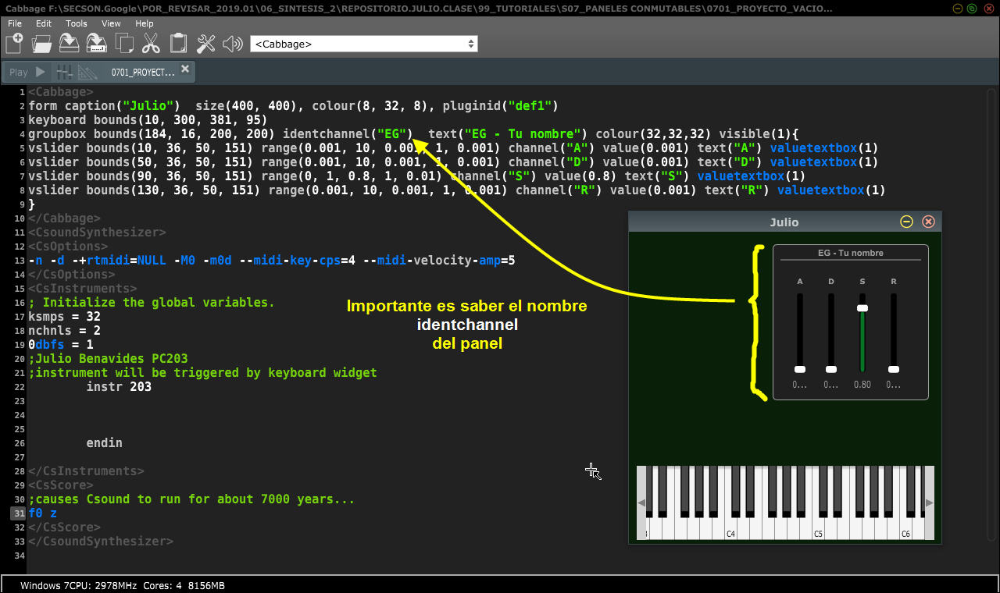
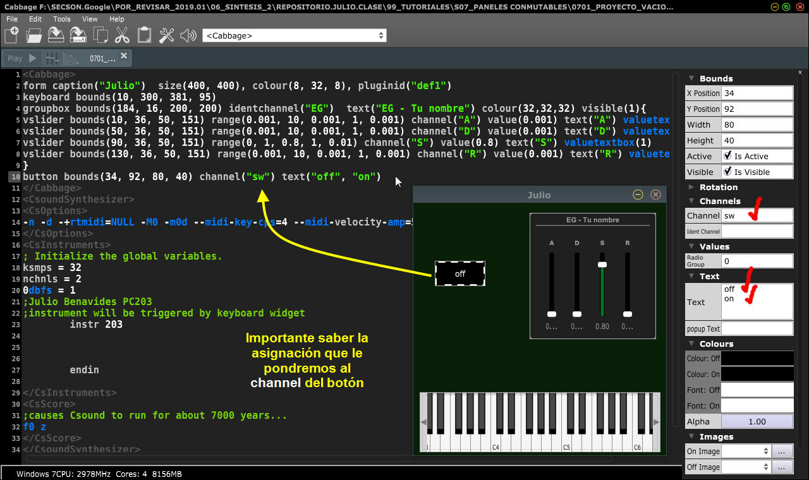
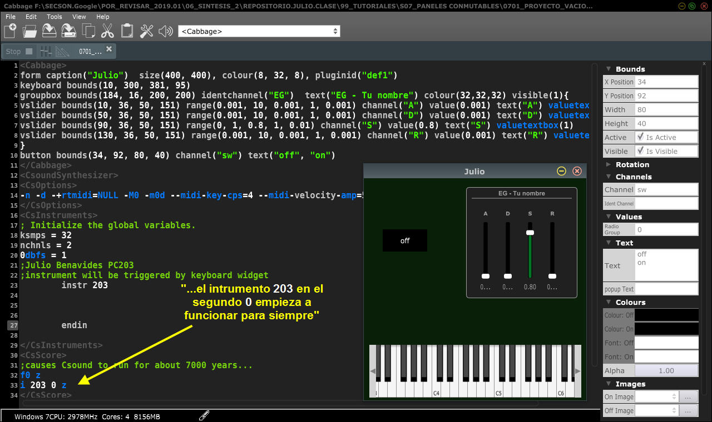

1. Implementación del panel conmutable
Vamos a tomar nuestro proyecto incial visto en 0701. Preparación del proyecto o en su defecto puedes utiizar éste:
<Cabbage>
form caption("Julio") size(400, 400), colour(8, 32, 8), pluginid("def1")
keyboard bounds(10, 300, 381, 95)
groupbox bounds(184, 16, 200, 200) identchannel("EG") text("EG - Tu nombre") colour(32,32,32) visible(1){
vslider bounds(10, 36, 50, 151) range(0.001, 10, 0.001, 1, 0.001) channel("A") value(0.001) text("A") valuetextbox(1)
vslider bounds(50, 36, 50, 151) range(0.001, 10, 0.001, 1, 0.001) channel("D") value(0.001) text("D") valuetextbox(1)
vslider bounds(90, 36, 50, 151) range(0, 1, 0.8, 1, 0.01) channel("S") value(0.8) text("S") valuetextbox(1)
vslider bounds(130, 36, 50, 151) range(0.001, 10, 0.001, 1, 0.001) channel("R") value(0.001) text("R") valuetextbox(1)
}
</Cabbage>
<CsoundSynthesizer>
<CsOptions>
-n -d -+rtmidi=NULL -M0 -m0d --midi-key-cps=4 --midi-velocity-amp=5
</CsOptions>
<CsInstruments>
; Initialize the global variables.
ksmps = 32
nchnls = 2
0dbfs = 1
;Julio Benavides PC203
;instrument will be triggered by keyboard widget
instr 203
endin
</CsInstruments>
<CsScore>
;causes Csound to run for about 7000 years...
f0 z
</CsScore>
</CsoundSynthesizer>
Importante identificar el identchannel del panel que queremos controlar:

Ahora añadiremos un botón. Importante será saber qué channel le asignaremos.

Recuerda que para que Csound envie datos a Cabbage el instrumento debe estar funcionando, para hacerlo de manera automática vamos a decirle que:
El instrumento 203 en el segundo 0 empieza a correr per secula seculorum...
